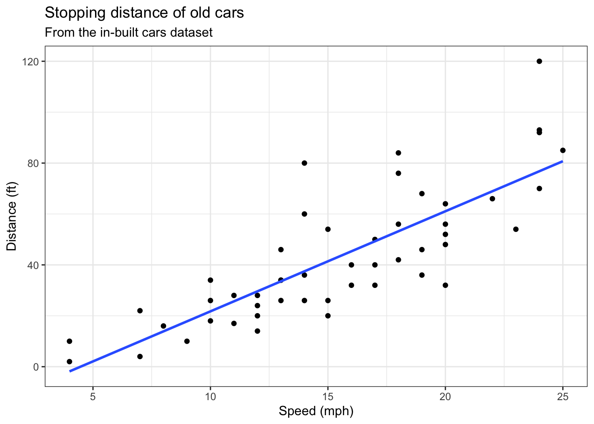
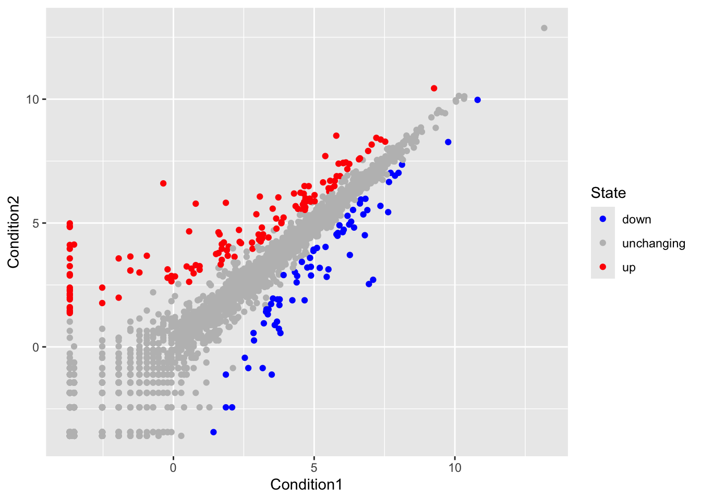
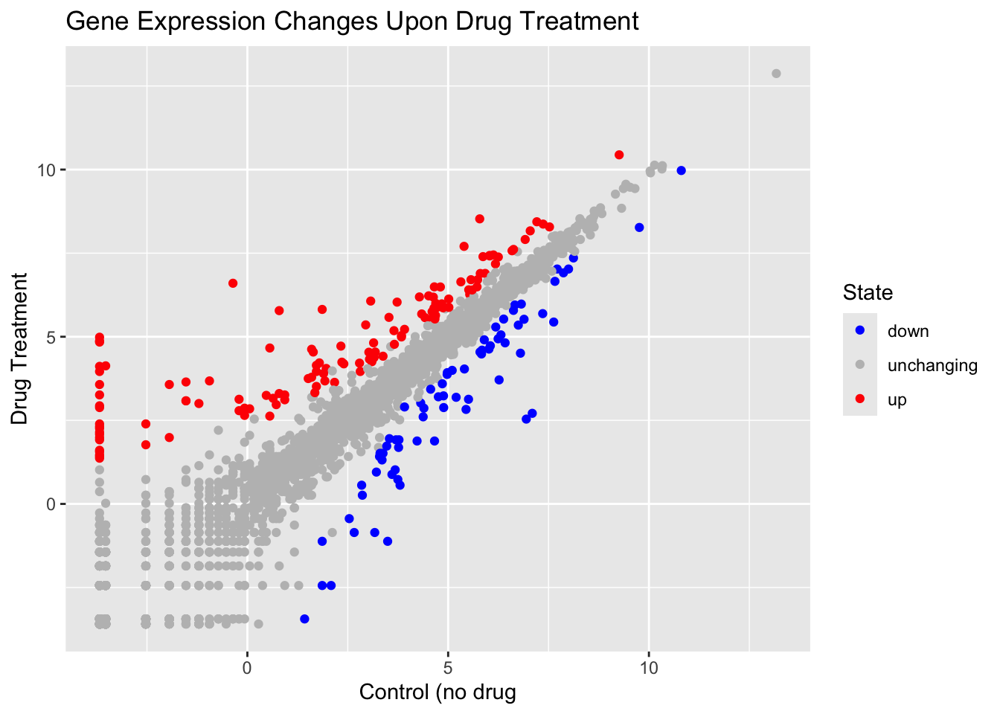
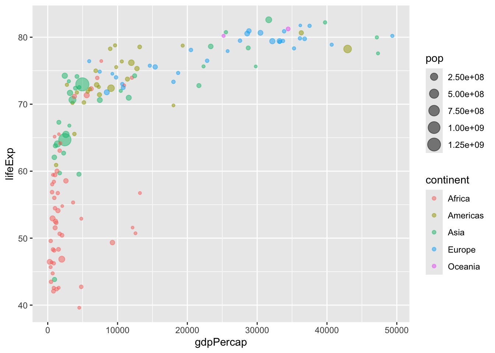
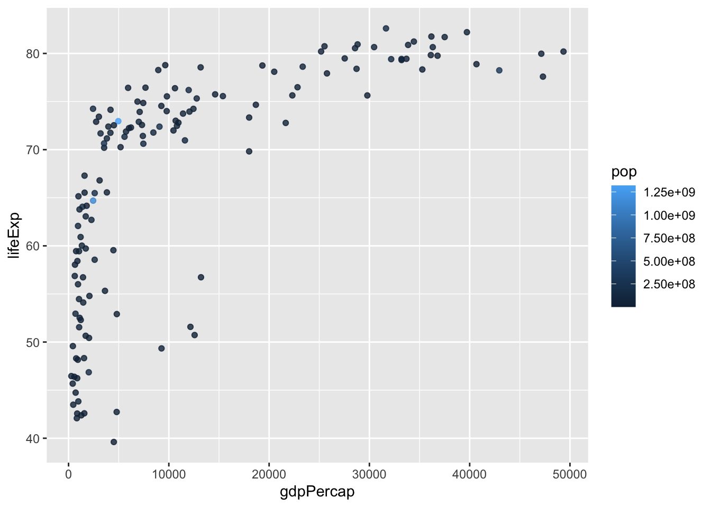
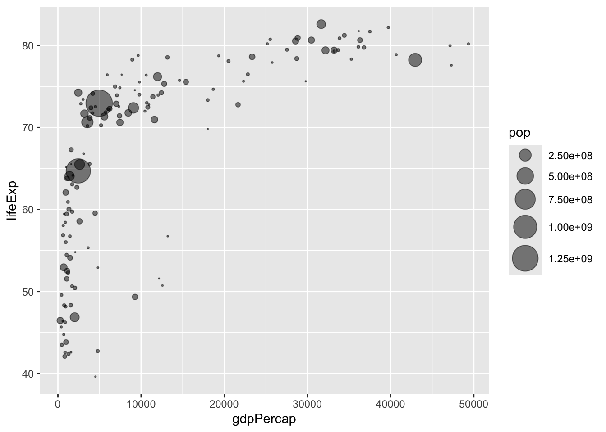

plot(cars)
R has lot’s of way to make plots and figure. This includes so-called base graphics and packages like ggplot2
plot(cars)
This is a base R plot of the in-built cars data set that only has two columns
head(cars) speed dist
1 4 2
2 4 10
3 7 4
4 7 22
5 8 16
6 9 10tail(cars) speed dist
45 23 54
46 24 70
47 24 92
48 24 93
49 24 120
50 25 85Q. ow would we plot this dataset with ggplot?
All ggplot figures have at least 3 layers:
Before I use any new package, I need to download and instal it with the install.packages() command
I never use install.packages() within my quarto document othewise I will install the package over and over and over again - which is silly!
Once a package is installed, I can load it up with the library function
# install.packages("ggplot2")
library(ggplot2)
ggplot(cars)+
aes(x = speed, y = dist)+
geom_point()
Key-points: For simple plots (like the one above), ggplot is more verbose (we need to do more typing) but as plots get more complicated ggplot starts to be more clear and simple than base R plot()
Answers to questions and codes are below
Q1. For which phases is data visualization important in our scientific workflows?
All of the above
Q2. True or False? The ggplot2 package comes already installed with R?
FALSE
Q3. Which plot types are typically NOT used to compare distributions of numeric variables?
Network graphs
Q4. Which statement about data visualization with ggplot2 is incorrect?
ggplot2 is the only way to create plots in R
Q5. Which geometric layer should be used to create scatter plots in ggplot2?
geom_point()
Q6. In your own RStudio can you add a trend line layer to help show the relationship between the plot variables with the geom_smooth() function?
ggplot(cars)+
aes(x = speed, y = dist)+
geom_point()+
geom_smooth()`geom_smooth()` using method = 'loess' and formula = 'y ~ x'
Q7. Argue with geom_smooth() to add a straight line from a linear model without the shaded standard error region?
ggplot(cars)+
aes(x = speed, y = dist)+
geom_point()+
geom_smooth(method = "lm", se = FALSE)`geom_smooth()` using formula = 'y ~ x'
Q8. Can you finish this plot by adding various label annotations with the labs() function and changing the plot look to a more conservative “black & white” theme by adding the theme_bw() function:
ggplot(cars)+
aes(x = speed, y = dist)+
geom_point()+
geom_smooth(method = "lm", se = FALSE)+
labs(title = "Stopping distance of old cars",
subtitle = "From the in-built cars dataset")+
theme_bw()+
xlab("Speed (mph)")+
ylab("Distance (ft)")`geom_smooth()` using formula = 'y ~ x'
Here we will:
size parameter.color parameter.alpha to change the transparency of all points.url <- "https://bioboot.github.io/bimm143_S20/class-material/up_down_expression.txt"
genes <- read.delim(url)
head(genes) Gene Condition1 Condition2 State
1 A4GNT -3.6808610 -3.4401355 unchanging
2 AAAS 4.5479580 4.3864126 unchanging
3 AASDH 3.7190695 3.4787276 unchanging
4 AATF 5.0784720 5.0151916 unchanging
5 AATK 0.4711421 0.5598642 unchanging
6 AB015752.4 -3.6808610 -3.5921390 unchangingQ9. Use the
nrow()function to find out how many genes are in this dataset. What is your answer?
nrow(genes)[1] 5196There are 5196 genes in this dataset
Q10. Use the
colnames()function and thencol()function on thegenesdata frame to find out what the column names are (we will need these later) and how many columns there are. How many columns did you find?
colnames(genes)[1] "Gene" "Condition1" "Condition2" "State" ncol(genes)[1] 4There are 4 columns/variables in this dataset
Q11. Use the
table()function on theStatecolumn of this data.frame to find out how many ‘up’ regulated genes there are. What is your answer?
table(genes$State)
down unchanging up
72 4997 127 There are 127 ‘up’ regulated genes
Q12. Using your values above and 2 significant figures. What fraction of total genes is up-regulated in this dataset?
round(table(genes$State)/nrow(genes) * 100, 2)
down unchanging up
1.39 96.17 2.44 2.44% of total genes is up-regulated in this dataset
Q13. Complete the code below to produce the following plot
ggplot(genes) +
aes(x=Condition1, y=Condition2) +
geom_point()
Map State column to point color
p <- ggplot(genes) +
aes(x=Condition1, y=Condition2, color = State) +
geom_point()Specify the color scale
p + scale_color_manual(values = c("blue", "gray", "red"))
Q14. Nice, now add some plot annotations to the p object with the labs() function so your plot looks like the following:
p +
scale_color_manual(values = c("blue", "gray", "red"))+
labs(title = "Gene Expression Changes Upon Drug Treatment")+
xlab("Control (no drug")+
ylab("Drug Treatment")
library(gapminder)
library(dplyr)
Attaching package: 'dplyr'The following objects are masked from 'package:stats':
filter, lagThe following objects are masked from 'package:base':
intersect, setdiff, setequal, uniongapminder_2007 <- gapminder %>% filter(year==2007)Q15. Complete the code below to produce a first basic scater plot of this
gapminder_2007dataset:
ggplot(gapminder_2007) +
aes(x=gdpPercap, y=lifeExp) +
geom_point(alpha=0.5)
Map the continent variable to the point color aesthetic and the population pop (in millions) through the point size argument to aes()
ggplot(gapminder_2007) +
aes(x=gdpPercap, y=lifeExp, color=continent, size=pop) +
geom_point(alpha=0.5)
Color the points by the numeric variable population pop
ggplot(gapminder_2007) +
aes(x = gdpPercap, y = lifeExp, color = pop) +
geom_point(alpha=0.8)
Adjusting point size
ggplot(gapminder_2007) +
geom_point(aes(x = gdpPercap, y = lifeExp,
size = pop), alpha=0.5) +
scale_size_area(max_size = 10)
Q16. Can you adapt the code you have learned thus far to reproduce our gapminder scatter plot for the year 1957? What do you notice about this plot is it easy to compare with the one for 2007?
gapminder_1957 <- gapminder %>% filter(year==1957)
ggplot(gapminder_1957) +
geom_point(aes(x = gdpPercap, y = lifeExp, color = continent,
size = pop), alpha=0.7) +
scale_size_area(max_size = 15)
Q17. Do the same steps above but include 1957 and 2007 in your input dataset for ggplot(). You should now include the layer facet_wrap(~year) to produce the following plot:
gapminder_data <- gapminder %>% filter(year==1957 | year==2007)
ggplot(gapminder_data) +
geom_point(aes(x = gdpPercap, y = lifeExp, color = continent,
size = pop), alpha=0.7) +
scale_size_area(max_size = 10)+
facet_wrap(~year)